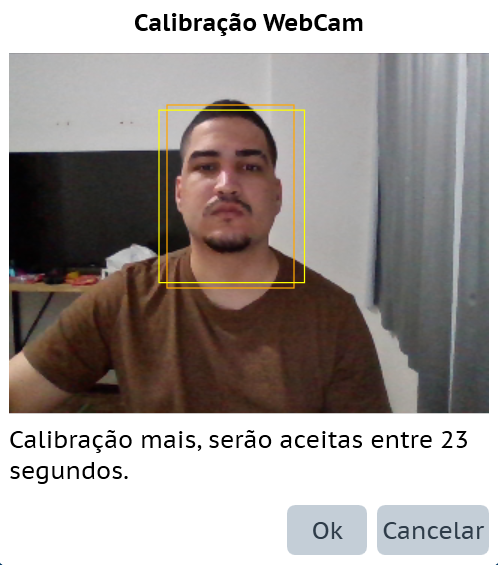

Disponível para Windows, Mac e Android, o
eSSENTIALAccessibility é um aplicativo de
tecnologia assistiva que busca auxiliar ao
disponibilizar diferentes ferramentas para facilitar a
utilização do sistema ou dispositivo no qual é
instalado.
Esse manual em português segue a versão para Windows da
aplicação. A versão utilizada como base é a 1.0.0.122 de
2023. Para contato com a equipe de suporte do
eSSENTIALAccessibility, que não possui
conexão com o grupo responsável por esse manual em
português, utilize o email:
support@essentialaccessibility.com
Entre as funcionalidades principais do
eSSENTIALAccessibility estão:
Teclado Virtual
Mouse por Movimento
Mouse XY
Mouse Radar
Opções de Cliques
Leitor de Texto do Cursor (baseado em posição do
mouse)
Comandos de Voz (em algumas linguagens)
Download e Instalação
Requerimentos mínimos:
Sistema operacional Microsoft Windows 10, Windows 8,
Windows 8.1 (o Windows 10 é recomendado)
Hardware capaz de funcionar decentemente com a
versão do Windows: processador de 1GHz, 1GB de RAM,
placa de vídeo DirectX9
20MB de espaço livre em seu disco rígido
É necessária uma
webcam compatível com o
Windows para utilizar o Mouse por Movimento
Microfone e alto-falantes são necessários para os
comandos de voz e as funcionalidade de leitura,
respectivamente
É necessária uma conexão com a Internet para
instalar o aplicativo
Escolher qual versão da aplicação você deseja
instalar entre Windows, Mac e Android. Para esse
tutorial, usaremos a opção Windows.
Clicar no botão “Download”.
O contrato de licença de usuário irá aparecer,
clicar no “I agree”.
Possivelmente o sistema pedirá para você selecionar
onde salvar a aplicação, clicar no “Salvar”.
Localize o arquivo cujo download foi feito, o nome
padrão é setup.exe, e abra o mesmo.
A janela de instalação irá aparecer, clique em
instalar e espere a instalação ser concluída.
Barra de Ferramentas e seus Ícones
A aplicação consiste de uma barra de ferramentas que
inicialmente aparecerá na parte superior da tela, sendo
que a posição dessa barra pode ser alterada nas
configurações, a barra contém ícones para ativar
determinadas funções da aplicação. Ela pode ser navegada
pela tecla “Tab”, porém utilizar essa navegação irá
ignorar o ícone de teclado.
Captura de tela mostrando a Toolbar.
Tabela de ícones da Toolbar.
Ícone
Descrição
Mouse XY
Mouse radar
Arrastar e soltar
Clique com o botão direito
Clique duplo
Comando de voz
Leitor de Texto do Cursor
Teclado virtual
Configurações
Ajuda
Sair do aplicativo
O ícone de “Ajuda” irá abrir uma página web contendo o
manual em inglês do
eSSENTIALAccessibility. O ícone de
“Sair” irá perguntar se você deseja sair do aplicativo
e, uma vez confirmado, irá fechar a aplicação. A
explicação do funcionamento dos demais ícones poderá ser
encontrada nas demais seções deste manual.
Teclado
O
eSSENTIALAccessibility
apresenta uma alternativa de teclado ao disponibilizar
um teclado virtual.
O teclado apresenta dois modos:
Automático: o teclado aparecerá automaticamente
quando detectado uma área de entrada de texto e será
fechado automaticamente quando selecionado um local
fora de sua área ou apertando o botão “X” em um dos
cantos do teclado.
Manual: o teclado aparece quando dado uma instrução
manual para que o mesmo apareça, e apenas será
fechado manualmente.
O modo automático encontra-se ativado inicialmente,
podendo ser alterado nas configurações. Para abrir o
teclado automaticamente, basta clicar em uma área que
aceite a entrada de texto. O fato do modo automático
estar ativado não significa que não se pode usar o modo
manual, ambos os modos funcionam simultaneamente.
Para abrir o teclado no modo manual, pode-se clicar no
botão do teclado na barra de ferramentas ou utilizar
comandos de voz, dependendo de sua disponibilidade para
linguagem.
Para fechar o teclado, pode-se clicar no botão de fechar
“X” no próprio teclado, no botão do teclado na barra de
ferramentas ou utilizar comandos de voz.
Uma vez aberto, o teclado irá aparecer em sua tela e a
maioria das teclas irá funcionar de maneira similar a
qual o teclado físico funcionaria. Na parte superior do
teclado, existem dois botões no lado esquerdo, um “+” e
“-” para controlar o tamanho do teclado, e um botão no
lado direito, o “X” para fechá-lo.
Algumas teclas (como “Alt”, “Ctrl” e “Windows”, essa
última representada pelo símbolo do Windows) possuem
dois modos, o normal e o selecionado. Essas são teclas
que costumam necessitar de uma segunda tecla para
realizar alguma ação, sendo assim, quando a tecla é
pressionada quando em seu modo normal, ela passa para o
modo selecionado onde aguarda que outra tecla seja
pressionada. Uma vez que uma segunda tecla seja
pressionada, ela retorna para o modo normal.
A tecla “Shift”, representada por uma seta para cima com
um círculo próximo, possui três modos: o normal, o
selecionado e o bloqueado. O selecionado funciona como o
descrito anteriormente, ele aguarda que uma segunda
tecla seja pressionada e então retorna ao modo normal. O
modo bloqueado age como o “Capslock” do teclado, e só irá retornar ao modo normal quando o
“Shift” for pressionado novamente.
A tecla “Sym”, quando pressionada, altera as letras e
números apresentados no teclado para mostrar opções de
símbolos e vogais acentuadas. Uma vez que ela alterou as
teclas, ela muda de “Sym” para “ABC”, pressionando o
“ABC” irá alterar as teclas do teclado para apresentar
as letras e números novamente.
Existe também uma tecla para ir para o fim da linha ou
dar “Tab”, representada por uma seta apontando para uma
linha vertical à sua direita, e uma tecla para apagar
tudo, representada por uma espécie de etiqueta colorida
com um ‘x’ em seu centro.
Na sua lateral direita, o teclado apresenta até cinco
sugestões de palavras com base nas letras digitadas.
Captura de tela do teclado virtual.
Captura de tela do teclado virtual mostrando
sugestões de palavras durante a digitação.
O
eSSENTIALAccessibility
apresenta funcionalidades para tornar o uso do mouse
padrão mais fácil. Essas funcionalidades podem ser
ativadas ou desativadas nas configurações.
De modo padrão, quando um clique é realizado, apresenta
um efeito visual na área na qual ocorreu o clique para
facilitar a visualização de onde está.
Para ajudar a localizar a posição do cursor, pode-se
ativar a visão XY, na qual será apresentado linhas
horizontal e vertical que se encontram na posição do
cursor.
Quando disponível para a linguagem, é possível controlar
o mouse por meio de comandos de voz. No modo analógico,
os comandos estariam relacionados com qual direção o
cursor deveria se movimentar baseado em sua atual
localização. No modo digital, com o auxílio da
funcionalidade que aplica uma grade 10 por 10 na tela
que divide em áreas menores que seriam as células da
grade, os comandos estariam relacionados com qual é o
código da célula e então o cursor seria colocado no
centro da célula escolhida.
É possível também ativar uma funcionalidade relacionada
a clique automático. Com ela ativada, quando o mouse
permanecer em um mesmo local sem se movimentar, ele
entenderá que deve realizar uma ação de clique naquele
local.
O mouse por movimento é uma alternativa de mouse que
necessita de uma
webcam para funcionar, o mouse
irá se mexer seguindo o movimento captado pela webcam.
Dependendo da qualidade da imagem e das condições de
iluminação esse mouse pode ter um melhor ou pior
desempenho. A webcam utilizada
pode ser alterada nas configurações.
Para ativar o mouse por movimento, pode-se clicar no
ícone referente a esse mouse, utilizar o atalho
Ctrl + F4 ou utilizar comando de
voz, dependendo de sua disponibilidade.
Para desativar esse mouse e retornar para o mouse
padrão, pode-se clicar no ícone referente a esse mouse,
utilizar o atalho
Ctrl + F1 ou utilizar comando de
voz.
Uma vez que esse mouse seja ativado, ele inicia uma
calibração da
webcam abrindo uma janela
pequena. A calibração é um processo no qual é definido a
área na qual vai haver o foco de detecção de movimento.
Para essa etapa, se o modo automático (que é o modo
padrão) estiver ativado é necessário que seu rosto
esteja diretamente em frente a
webcam para que ele seja
detectado e a área de foco definida. Se o modo manual
estiver ativado, ação que pode ser realizada nas
configurações, você poderá selecionar qual será a área
de foco.

Captura de tela mostrando o processo de calibração
do mouse por movimento.
Uma vez que a calibração é concluída, a janela de
calibração é fechada e o logo do
eSSENTIALAccessibility
presente na barra de ferramentas é substituído por uma
área que mostra o que a
webcam está captando. Caso você
tenha problemas com a área de foco, é possível calibrar
novamente pressionando essa nova área que exibe o vídeo
da webcam.
O mouse irá começar a se movimentar baseado no movimento
realizado dentro da área de foco, esse movimento na área
pode ser tanto o da sua cabeça quanto o de um dedo ou
outro objeto. Por padrão, para realizar a ação de clicar
basta que o mouse por movimento fique parado em um mesmo
local por alguns segundos que um clique automático irá
acontecer.
Para posicionar seu cursor no centro da tela, basta
balançar sua cabeça duas vezes na horizontal.
O mouse XY é uma alternativa de mouse que consiste do
escaneamento vertical e horizontal da tela por linhas
para determinar onde realizar um clique.
Para ativar o mouse XY, pode-se clicar no ícone
referente a esse mouse, utilizar o atalho
Ctrl + F2 ou utilizar comando de
voz, dependendo da disponibilidade.
Para desativar o mouse XY, pode-se clicar no ícone
referente a esse mouse, utilizar o atalho
Ctrl + F1 ou utilizar comando de
voz.
Uma vez que esse mouse seja ativado, uma linha
horizontal irá aparecer na tela e movimentar-se
verticalmente de cima para baixo em repetição até que um
clique esquerdo seja realizado. O clique deve ser feito
quando a linha alcançar a posição vertical desejada.
Captura de tela mostrando a utilização do mouse XY -
Linha horizontal
A linha anterior fica fixada na posição determinada e
uma nova linha vertical aparecerá e irá se mover
horizontalmente da esquerda para a direita em repetição.
Quando a linha alcançar a posição horizontal necessária,
basta realizar um clique. Uma vez que a linha horizontal
e a vertical vão estar cruzando uma outra, ocorrerá um
clique na área onde elas se encontram.
Captura de tela mostrando a utilização do mouse XY -
Linha vertical
Existe um certo atraso entre o clique realizado na
intersecção das linhas e o escaneamento voltar para o
início, esse atraso existe para caso seja necessário
mais de um clique em uma mesma posição. É possível
alterar a velocidade do movimento das linhas e o tempo
do atraso do clique nas configurações.
Caso você tenha perdido a posição correta vertical ou
horizontal, você pode esperar a linha finalizar todo o
percurso da tela e retornar, ou dar um clique direito
para que a linha percorra na direção inversa.
Esse mouse também funciona com o teclado virtual. Quando
utilizando esse mouse com o teclado, ele irá percorrer
apenas a área do teclado para facilitar a digitação das
teclas sem percorrer áreas desnecessárias da tela.
O mouse radar é uma alternativa de mouse que consiste de
uma dinâmica similar ao do mouse XY, onde, invés de
escanear verticalmente e horizontalmente, ele escaneia a
tela de maneira circular.
Para ativar o mouse radar, pode-se clicar no ícone
referente a esse mouse, utilizar o atalho
Ctrl + F5 ou utilizar comando de
voz, dependendo da disponibilidade.
Para desativar o mouse radar, pode-se clicar no ícone
referente a esse mouse, utilizar o atalho
Ctrl + F1 ou utilizar comando de
voz.
Uma vez que esse mouse seja ativado, existem dois pontos
de referência que podem ser usados: o canto superior
esquerdo, que é a opção padrão, e o centro da tela.
Independente de qual seja o ponto de referência,
aparecerá uma linha partindo desse ponto que fará um
movimento circular pela tela em repetição. Uma vez que
essa linha estiver na posição desejada, basta realizar
um clique esquerdo e ela será fixada.
Captura de tela mostrando o mouse radar com ponto de
referência no canto e no centro.
Com a linha fixada, uma área circular irá percorrer a
linha do ponto de referência até o fim da tela em
repetição. Quando esse círculo chegar no local desejado,
basta realizar um clique. Nesse local que o círculo
parou será realizado o clique.
Captura de tela mostrando o mouse radar com a linha
selecionada e o círculo percorrendo a linha.
Existe um certo atraso entre o clique realizado e o
escaneamento voltar para o início, esse atraso existe
caso seja necessário mais de um clique nessa mesma
posição. É possível também alterar o tempo do atraso do
clique e a velocidade do movimento da linha e do círculo
nas configurações.
Caso você tenha perdido a posição correta para linha ou
círculo, você pode esperar eles finalizarem todo o seu
percurso na tela e retornar, ou dar um clique direito
para que a linha ou círculo percorra na direção inversa.
Esse mouse também funciona com o teclado virtual. Quando
utilizando esse mouse com o teclado, ele irá percorrer
apenas a área do teclado para facilitar a digitação das
teclas sem percorrer áreas desnecessárias da tela.
Quando o assunto são os cliques existem duas
considerações importantes a serem feitas: como realizar
um clique (identificação do dispositivo que está sendo
usado) e que tipo de clique deve ser executado (clique
com o botão esquerdo, clique com o botão direito, clique
duplo ou arrastar e soltar).
Esta aplicação aceita a utilização de diferentes
dispositivos para cliques (mouse,
switch, outros programas, etc.).
Além disso, possui recursos de clique através de comando
de voz (quando disponível para a linguagem selecionada)
e de clique automático, que permite você clicar
simplesmente ao posicionar o cursor na área desejada por
alguns segundos.
Dispositivo Padrão de Clique
Ao utilizar um dispositivo para cliques( mouses comuns,
switches modificados, controles,
etc.), a aplicação permite que o clique seja efetuado ao
pressionar o botão, em vez de soltá-lo, como é o padrão.
No entanto, é importante observar que ao optar por essa
configuração, não será possível executar a ação de
arrastar e soltar da maneira convencional. Em vez disso,
será necessário usar os botão de ação de clique
"Arrastar e soltar", conforme explicado na subseção
"Seleção de Ação de Clique".
Sendo útil para usuários que podem ter mais dificuldades
em controlar a ação de soltar o clique do que a ação de
pressionar. É possível realizar essa troca nas
configurações.
Clique Automático
O clique automático realiza um clique quando você pausa
o cursor na posição desejada por alguns segundos. Devido
à sua natureza, o clique automático só pode ser ativado
ao usar um sistema em que você controla diretamente a
posição do cursor, como, por exemplo, o mouse padrão e o
mouse por movimento. Assim, não é possível utilizar essa
funcionalidade em conjunto com o mouse radar ou o mouse
XY.
Para utilizar essa função, ela deve ser ativada nas
configurações, estando, por padrão, desativada para
opções de mouse convencional e ativada para o mouse por
movimento.
Quando o clique automático está ativado, um botão de
pausa aparece ao lado dos botões de ação de clique. Se
você clicar nele, o clique automático será pausado, e
nenhum outro clique será realizado, transformando o
botão em um botão de reprodução. Também é possível
pausar o clique automático utilizando o comando de voz.
A opção de pausar pode ser útil quando você estiver
envolvido em uma atividade prolongada que não exija
interação, como ler um texto ou assistir a um vídeo, e
você não quer ser incomodado por cliques indesejados.
Para reativar o clique automático, basta posicionar o
cursor sobre o botão
"play" (o botão de reprodução) e
aguardar pelo tempo de um clique, sendo possível também
ativá-lo via comando de voz. É importante destacar que
quando o clique automático está pausado, ele continuará
respondendo no botão de pausa/play, mesmo que não
funcione em nenhum outro lugar. Portanto, evite
descansar o cursor sobre esse botão, pois a aplicação
alternará entre pausa e
"play" sempre que o tempo de
clique for atingido.
Nas configurações, é possível ajustar o tempo de espera
antes do clique, a tolerância de movimento para
determinar se o cursor se moveu ou não, a capacidade de
realizar múltiplos cliques no mesmo local e a opção de
utilizar seu dispositivo de clique em conjunto com o
clique automático.
A aplicação permite que você execute vários tipos de
cliques necessários para diferentes objetivos, como o
clique duplo, o clique com o botão direito e o arrastar
e soltar. Caso esteja utilizando um
switch de clique único ou a
ferramenta de clique automático, seria difícil realizar
essas ações sem tais opções.
Para realizar uma ação de clique diferente do clique com
o botão esquerdo, selecione a ação de clique clicando no
botão correspondente da barra de ferramentas (por
padrão, ela fica na parte superior da tela). O botão
selecionado fica, então, ativado, e em seguida, você
apenas precisa clicar onde deseja.
Captura de tela da Toolbar com os ícones de ação do
mouse destacados.
Por exemplo, caso esteja utilizando o mouse por
movimento e precise realizar um clique com o botão
direito ou um clique duplo, primeiro vá até o botão
"Clique direito" na barra de ferramentas
ou até o botão "Clique duplo"
, conforme seja sua necessidade, e clique nele. Em
seguida, seu próximo clique terá o efeito do botão
selecionado. Após a execução do clique de ação, a
configuração é automaticamente redefinida, fazendo com
que o próximo clique retorne ao padrão de clique com o
botão esquerdo do mouse.
É bom ressaltar que a opção "arrastar e soltar" afeta os
dois cliques seguintes, esta funcionalidade é
representada pelo ícone
[IMAGEM do ícone de arrastar e soltar]. Primeiro, selecione a opção "arrastar e soltar";
deste modo o clique subsequente selecionará o item e
iniciará o processo de arrastá-lo para onde desejar. Em
seguida, seu próximo clique encerrará o processo de
"arrastar e soltar". Após a conclusão da ação, a
configuração é automaticamente redefinida para o clique
com o botão esquerdo, conforme o padrão.
Você pode realizar qualquer uma dessas ações utilizando
qualquer substituto de mouse, incluindo o mouse padrão,
mouse radar, mouse XY e programas que realizem cliques.
Sendo possível também utilizá-las através do comando de
voz, mas tenha em mente que existe um pequeno atraso
entre a fala e a ativação do comando que deve ser levado
em conta quando utilizando alguma opção de mouse que o
deixe em movimento, conforme você for utilizando a
aplicação você irá se acostumar e entender quanto antes
deve falar para que não possua problemas.
Para entender os demais comandos disponíveis para seu
uso dos “Comandos de Voz” nas “Ações de clique”,
prossiga para a seção de Lista de Comandos.
Você pode ir direto para a seção clicando aqui.
Leitor de Texto do Cursor
A barra de ferramentas oferece a funcionalidade de
leitura de texto sobre o cursor, que permite que você
ouça a descrição da tela do que está abaixo do cursor.
A função de leitura pode ser ativada ou desativada ao
clicar no botão de leitura na barra de ferramentas,
representado pelo ícone
, ou utilizando os comandos de voz, quando disponíveis
para a linguagem.
Essa função só está disponível se você possuir o
mecanismo de “Texto para fala” habilitado em seu
computador. Veja a subseção “Como configurar o leitor de
texto”.
Esta funcionalidade é como um simples leitor de tela.
Através dela o texto sob o cursor é lido para você ao
parar ele por um período de 0.5 a 1 segundo.
Quando o texto é lido, ele é também demarcado por um
pequeno contorno colorido para que você possa saber o
que está sendo lido.
O texto lido é provido pela aplicação pela qual você
está navegando, atualmente a maioria das aplicações se
preocupam em fornecer informações corretas mas ainda é
possível que não o façam, então cuidado é necessário.
Como Configurar o Leitor de Texto do Cursor
As funcionalidades do leitor de texto podem ser
configuradas abrindo a aba "Leitura" nas configurações.
A opção "Voz" permite que você selecione qual voz será
utilizada para a leitura dos elementos. Escolha a
preferida da lista.
Captura de tela mostrando a configuração 'Voz' do
aplicativo.
Se desejar adicionar mais vozes, clique no botão "Abra a
janela de configuração do Windows", vá para a área
"Idiomas preferidos" e clique em "Adicionar um idioma".
Captura de tela mostrando a janela 'Idioma' do
Windows.
Nesse ponto, você poderá escolher o pacote de idioma que
deseja baixar. Para que o idioma baixado seja adicionado
ao aplicativo, é importante selecionar um que inclua a
opção "Conversão de texto em fala" (isso pode ser
verificado pela presença do símbolo
ao lado do nome da língua). Após selecionar a linguagem,
clique em avançar e, em seguida, em instalar. Após a
conclusão da instalação, reinicie o aplicativo e o novo
pacote de voz aparecerá na lista de opções.
Captura de tela mostrando a instalação de um novo
idioma.
Captura de tela mostrando o idioma a ser instalado
selecionado.
Captura de tela mostrando a instalação de um novo
idioma após clicar em 'Avançar'.
A opção "Volume" permite que você controle o volume da
leitura em relação ao volume do seu áudio. O padrão é
100%, o que significa que está no mesmo volume que o
dispositivo de áudio. Se você definir o volume para 50%,
a voz terá metade do volume de outras fontes de áudio,
como filmes ou músicas. Não é possível aumentar o volume
para mais de 100%; se desejar aumentá-lo, ajuste o
volume no seu sistema de áudio.
A opção "velocidade de leitura" se refere à rapidez com
que a voz lerá o texto. O valor padrão "50" corresponde
à velocidade de fala padrão. Aumente ou diminua este
valor para ajustar a velocidade da leitura.
O programa também pode ser controlado por comandos de
voz, se você tiver uma ferramenta compatível de
reconhecimento de voz. Esses comandos são projetados
para controlar exclusivamente as funções do "eSSENTIALAccessibility Windows Application" e não funcionam com as funções de outros programas.
Os comandos de voz podem ser habilitados ou
desabilitados ao clicar no botão "Comando de Voz",
representado pelo ícone
na barra de ferramentas. Quando habilitado, o ícone do
comando é destacado.
Se o seu sistema não possuir uma ferramenta de
reconhecimento de fala para o idioma que você estiver
usando, então o botão não estará presente (esta opção
não é compatível com o idioma português, mas está
disponível para inglês e espanhol).
Caso esteja utilizando o programa em português e deseje
usar os comandos de voz, será necessário fazer a troca
do idioma da aplicação para algum idioma que suporte
essa função. Isso pode ser feito na aba "Geral" do menu
de configurações.
Configurando Comandos de Voz
Os comandos de voz podem ser configurados ao abrir a aba
"Comandos de Voz" nas configurações. Se você tiver pelo
menos uma ferramenta de reconhecimento de fala
disponível para o seu idioma atual, você pode
selecioná-la na lista de "Ferramentas de Reconhecimento
de Voz". No entanto, é importante reiterar que a
aplicação não é compatível com o português,
impossibilitando o uso de comandos de voz neste idioma
mesmo que possua a ferramenta de reconhecimento de fala.
O processo para adicionar uma ferramenta de
reconhecimento de fala é semelhante ao de adição de voz,
conforme visto na subseção “Como Configurar o Leitor de
Texto do Cursor” da seção
“Leitor de Texto do Cursor”.
Para realizar a adição, você precisará acessar a aba
"Leitura" no menu de configurações da aplicação, clicar
no botão "Abra a janela de configuração do Windows", ir
para a área "Idiomas preferidos" e clicar em "Adicionar
um idioma". Nesse ponto, você poderá escolher o pacote
de idioma que deseja baixar.
Captura de tela mostrando a janela 'Idioma' do
Windows.
Para que o idioma baixado seja adicionado ao aplicativo,
é importante selecionar um que inclua a opção
"Reconhecimento de Fala" (isso pode ser verificado pela
presença do símbolo
ao lado do nome da língua). Após selecionar o idioma,
clique em avançar e, em seguida, em instalar. Após a
conclusão da instalação, reinicie o aplicativo e o novo
pacote de voz aparecerá na lista de opções. Lembrando
que será necessário fazer a troca do idioma da aplicação
para algum idioma que suporte essa função. Isso pode ser
feito na aba "Geral" do menu de configurações.
Captura de tela mostrando a instalação de um novo
idioma.
Captura de tela mostrando o idioma a ser instalado
selecionado.
Captura de tela mostrando a instalação de um novo
idioma após clicar em 'Avançar'.
Captura de tela mostrando a tela de configurações
gerais.
Idioma
Você pode selecionar em qual idioma você gostaria que o
eSSENTIAL Accessibility esteja. Por padrão, ele irá
iniciar com o idioma do seu sistema se possível, caso
não seja possível o padrão será o Inglês/English.
Posição da barra de ferramentas
Você pode selecionar onde gostaria que a barra de
ferramentas fique entre as bordas de cima, baixo,
esquerda ou direita. Por padrão, a barra estará
localizada na parte de cima da tela.
Substitutos de mouse ativado na inicialização
Você pode selecionar qual mouse estará ativado quando o
eSSENTIAL Accessibility for iniciado entre o mouse comum
e as alternativas de mouse ofertadas pelo aplicativo.
A cor dos botões ativos
Você pode selecionar qual cor irá representar as
ferramentas ativadas na barra de ferramentas.
Iniciar o aplicativo sempre que iniciar o Windows
Selecionar essa opção fará com que toda vez que você
ligue seu computador o aplicativo do eSSENTIAL
Accessibility seja iniciado sem que você tenha que
manualmente abri-lo.
Ativar arquivo de log
Essa opção não deverá ser tocada sem o pedido do time de
suporte do eSSENTIAL Accessibility. Ela é utilizada para
caso você tenha problemas ao usar o aplicativo e entre
em contato com o suporte através do email
support@essentialaccessibility.com.
Redefinir todas as configurações para os valores padrão
Desfaz todas as alterações realizadas nas configurações
e retorna as mesmas para os valores padrão.
Configurações de Teclado
Captura de tela mostrando a tela de configurações do
teclado.
Abrir teclado automaticamente
Quando essa opção estiver ativada, o teclado virtual
poderá ser aberto tanto de maneira automática, onde o
teclado aparecerá automaticamente quando detectado uma
área de entrada de texto, como manual.
Utilize o teclado virtual integrado
Quando essa opção estiver ativada, o teclado virtual
utilizado será o da eSSENTIAL Accessibility. Quando essa
opção estiver desativada, ele utilizará o teclado do
próprio sistema Windows.
Layout
Você pode selecionar qual o modelo de disposição das
teclas você deseja ter para o seu teclado. Por padrão
ele irá iniciar com o layout utilizado pelo seu sistema,
caso ele não seja possível, o padrão será o
Inglês/English.
Largura do fator de zoom (%)
Essa opção permite que você altere individualmente a
largura do teclado. No próprio teclado virtual existem
botões “+” e “-” que alteram a largura e a altura em
conjunto.
Altura do fator de zoom (%)
Essa opção permite que você altere individualmente a
altura do teclado. No próprio teclado virtual existem
botões “+” e “-” que alteram a altura e a largura em
conjunto.
Configurações de Mouse Padrão
Captura de tela mostrando a tela de substitutos de
mouse.
Clique automático
Quando esta opção for ativada, o clique por mouse ou
botão será desativado e os cliques passarão a ser feitos
de maneira automática. O clique automático consiste em
realizar a ação de clique em um local no qual o cursor
permaneceu parado por alguns segundos. Existem outras
opções de configuração para o clique automático na
categoria “Opções de clique”.
Mostrar grade
Quando esta opção for ativada, uma grade de 10 por 10
será aplicada na tela, ela divide a tela em áreas
menores chamadas de células e cada uma possui seu
próprio código. Os códigos envolvem colunas de A a J e
linhas de 1 a 10, exemplo: célula A1 e célula B2.
Mostrar visão XY
Quando esta opção for ativada, o cursor se tornará um
círculo cortado por uma linha vertical e uma horizontal
que se estendem até o fim da tela.
Mais opções
Clicando em “Mais opções”, outras opções irão aparecer.
Relacionado à grade:
Espessura das linhas de grade:
Permite definir a grossura das linhas que compõem a
grade, tornando-as mais ou menos grossas.
Cor da grade: Permite alterar a cor
das linhas da grade.
Relacionado à visão XY:
Largura da barra XY:
Permite definir a largura das linhas que cortam
vertical e horizontalmente a tela com base na
posição do cursor.
Cor da barra XY: Permite alterar a
cor das linhas presentes na visão XY.
Raio de visão XY: Permite alterar o
tamanho do círculo que substitui o cursor.
Configurações do Mouse por Movimento
Captura de tela mostrando a configuração do mouse
visual (parte 1).
Captura de tela mostrando a configuração do mouse
visual (parte 2).
Captura de tela mostrando a configuração do mouse
visual (parte 3).
WebCam:
Permite escolher qual webcam será utilizada quando o
mouse por movimento for ativado.
A configuração da área:
Você pode selecionar entre ter a calibração da área de
foco do movimento automática ou manual. A opção de
“Configurar” ao lado irá iniciar um processo de
calibração.
Faça a calibração na inicialização do mouse visual:
Quando esta opção estiver ativada, quando o mouse por
movimento for ativado irá ser iniciado um processo de
calibração automaticamente.
Sensibilidade horizontal (%):
Permite que você altere a velocidade do movimento
horizontal do mouse quando o movimento é detectado na
área de foco.
Sensibilidade vertical (%):
Permite que você altere a velocidade do movimento
vertical do mouse quando o movimento é detectado na área
de foco.
Clique automático:
Quando esta opção for ativada, a ação do clique será
realizada quando o cursor do mouse permanecer parado em
um mesmo local por alguns segundos.
Mostrar grade:
Quando esta opção for ativada, uma grade de 10 por 10
será aplicada na tela, ela divide a tela em áreas
menores chamadas de células e cada uma possui seu
próprio código.
Mostrar visão XY:
Quando esta opção for ativada, o cursor se tornará um
círculo cortado por uma linha vertical e uma horizontal
que se estendem até o fim da tela.
Mais opções:
Clicando em “Mais opções”, outras opções irão aparecer.
Relacionado à grade:
Espessura das linhas de grade:
Permite definir a grossura das linhas que compõem a
grade.
Cor da grade: Permite alterar a cor
das linhas da grade.
Relacionado à visão XY:
Largura da barra XY:
Permite definir a largura das linhas que cortam
vertical e horizontalmente a tela com base na
posição do cursor.
Cor da barra XY: Permite alterar a
cor das linhas presentes na visão XY.
Raio de visão XY: Permite alterar o
tamanho do círculo que substitui o cursor.
Calibração:
Tempo de espera antes de iniciar a calibração
(s):
Permite definir quanto tempo de atraso antes da
calibração ser iniciada.
Tempo de espera antes de aceitar a calibração
(s):
Permite definir quanto tempo de atraso antes de
aceitar automaticamente a calibração realizada.
Configurações do Mouse XY
Captura de tela mostrando a configuração do mouse
XY.
Velocidade vertical
Permite alterar a velocidade com a qual a linha irá se
movimentar verticalmente.
Velocidade horizontal
Permite alterar a velocidade com a qual a linha irá se
movimentar horizontalmente.
Uma pausa após o clique
Permite alterar quanto tempo de atraso existe entre a
ação de clicar e o escaneamento da tela começar
novamente.
Mais opções
Clicando em “Mais opções”, outras opções irão aparecer.
Cor da barra
Permite alterar a cor das linhas e círculo que irão
escanear a tela.
Largura da barra
Permite definir qual será a largura das linhas e
círculo.
Raio de visão
Permite definir o tamanho do círculo que representa o
local onde as linhas horizontal e vertical se encontram
e o clique será realizado.
“Ponteiro segue visão
Quando ativada, permite que o cursor do mouse, que
“desaparece” da tela, siga as linhas e quando o mouse XY
for desativado ele encontre-se onde as linhas estavam
por último.
Configurações do Mouse Radar
Captura de tela mostrando a configuração do mouse
radar (parte 1).
Captura de tela mostrando a configuração do mouse
radar (parte 2).
Posição central do radar
Uma vez que o mouse radar tem dois possíveis pontos de
referência para seu funcionamento, esta opção permite
que você defina qual será o ponto de referência.
Velocidade angular
Permite alterar a velocidade com a qual a linha se
movimenta de forma circular.
Velocidade axial
Permite alterar a velocidade com a qual o círculo irá
percorrer a linha definida até a área onde o clique será
realizado.
Uma pausa após o clique
Permite alterar quanto tempo de atraso existe entre a
ação de clicar e o escaneamento da tela começar
novamente.
Mais opções
Clicando em “Mais opções”, outras opções irão aparecer.
Cor da barra: Permite alterar a cor
da linha e círculo que irá escanear a tela.
Largura da barra: Permite definir
qual será a largura da linha e do círculo.
Raio de visão: Permite definir o
tamanho do círculo que representa o local onde as
linhas horizontal e vertical se encontram e o clique
será realizado.
Ponteiro segue visão:
Quando ativada, permite que o cursor do mouse, que
“desaparece” da tela, siga a linha e quando o mouse
radar for desativado ele encontre-se onde a linha
estava por último.
Configurações de Opções de Clique
Captura de tela mostrando a configuração de opções
de cliques (parte 1).
Captura de tela mostrando a configuração de opções
de cliques (parte 2).
Efeito visual
Quando ativado, realizar a ação de clique irá causar um
efeito ao redor da área para fácil visualização de onde
ocorreu o clique.
Clique ao apertar botão
Quando ativada, o clique será efetuado na ação de
pressionar o botão invés do ato de soltar o botão após
pressionar como é o padrão.
Mais opções
Clicando em “Mais opções”, outras opções irão aparecer.
Relacionado ao efeito visual:
Tamanho visual: Permite alterar o
tamanho do efeito visual.
Cor: Permite alterar a cor do
efeito visual.
Relacionado ao clique automático:
Tempo de permanência antes de clicar
(seg):
Permite determinar quanto tempo o cursor deve
permanecer parado para então a ação de clique ser
realizada.
Limite de posição (pixels): Permite
determinar qual é a tolerância de movimento em
pixels que podem ser ignorados para realizar o
clique automático.
Permitir clique repetido: Quando
ativada, permite que mais de um clique automático
seja realizado em um mesmo local.
Permitir clique do mouse: Quando
ativada, aceitará ambos o clique automático por
falta de movimento quanto o clique manual. Quando
desativada, a única forma de clique é automático,
uma vez que irá bloquear o clique manual.
Configurações de Leitura (Leitor de Texto do Cursor)
Captura de tela mostrando as configurações de
leitura.
Voz
Entre as opções disponíveis para o seu sistema e
linguagem, esta opção permite que você escolha qual voz
realizará as leituras.
Volume (%)
Permite alterar o volume de leitura realizado pelo
eSSENTIAL Accessibility comparado com o volume do seu
aúdio.
Velocidade de leitura
Permite alterar a velocidade com a qual a leitura será
realizada.
Abra a janela de configuração do Windows
Irá abrir as configurações do seu Windows relacionadas
ao idioma e fala para que você possa tentar
adicionar/fazer o download de novas vozes.
Configurações de Comandos de Voz
Dependendo da linguagem utilizada essa seção não estará
disponível. Uma mensagem aparecerá informando que o
sistema não suporta o reconhecimento de voz na
linguagem. Esse é o caso para quem utiliza a linguagem
Português.
Captura de tela mostrando as configurações de
comandos de voz para português.
Caso esteja com uma linguagem compatível e tenha os
pacotes de voz baixados, outra informação será exibida.
A demonstração abaixo está utilizando a linguagem
Inglês/English.
Captura de tela mostrando as configurações de
comandos de voz para inglês com pacote instalado.
Voice recognition engine
Esta opção permite selecionar qual mecanismo de
reconhecimento de voz será utilizado.
Show Commands
Abre uma página web contendo os comandos aceitos pelo
aplicativo.
Caso não tenha certeza do que cada ícone significa,
segue aqui uma tabela com seus nomes.
Tabela de ícones.
Ícone
Descrição
Mouse por movimento
Mouse XY
Mouse radar
Arrastar e soltar
Clique com o botão direito
Clique duplo
Comando de voz
Leitor de Texto do Cursor
Teclado virtual
Configurações
Ajuda
Sair do aplicativo
Atalhos
Os atalhos aceitos pelo eSSENTIAL Accessibility são:
Tabela de atalhos.
Atalho
Descrição
CTRL + F1
Desativa qualquer tipo de alternativa de
mouse e retorna para o mouse padrão.
CTRL + F2
Ativa o Mouse XY.
CTRL + F4
Ativa o Mouse por Movimento.
CTRL + F5
Ativa o Mouse Radar.
Comandos
Como os comandos de voz não estão disponíveis em
português a tabela abaixo indica o comando de voz em
inglês com uma explicação traduzida de sua função.
Tabela de comandos de voz principais.
Comando
Ação
Start XY mouse
Inicia o mouse XY
Start radar mouse
Inicia o mouse radar
Start hands-free mouse
Inicia o mouse por movimento
Stop mouse
Para o substituto de mouse em uso
Click
Realiza um clique
Enable speech over
Habilita leitura de texto do cursor
Disable speech over
Desabilita leitura de texto do cursor
"Open keyboard" ou "Show keyboard"
Abre teclado virtual
"Close keyboard" ou "Hide keyboard"
Fecha teclado virtual
"Open settings" ou "Show settings" ou "Open
options" ou "Show options"
Abre menu de configurações
"Close settings" ou "Close options" ou "Hide
settings" ou "Hide Options"
Fecha menu de configurações
"Show help" ou "Show user manual" ou "Open
help" ou "Open user manual"
Abre a ajuda online
Show voice commands
Mostra os comandos de voz disponíveis
Enable dictation
Habilita modo discurso para texto
Disable dictation
Desabilita modo discurso para texto
"Exit" ou "Exit application"
Fecha o "eSSENTIAL accessibility Windows
Application"
Tabela de comandos de voz para caixas de diálogo.
Comando
Ação
OK
Clica no botão de "OK"
Yes
Clica no botão de "Yes"
No
Clica no botão de "No"
Cancel
Clica no botão de "Cancel"
Close
Clica no botão de "Close"
Tabela de comandos de voz para o mouse Radar e mouse
XY.
Comando
Ação
"Reverse direction" ou "Change direction"
Reverte a direção de movimento do mouse
"Faster" ou "Speed up"
Aumenta a velocidade do cursor
"Slower" ou "Speed down"
Diminui a velocidade do cursor
"High speed" ou "Maximum speed"
Aumenta a velocidade do cursor para o máximo
"Low speed" ou "Minimum speed"
Diminui velocidade para o mínimo
Tabela de comandos de voz para o mouse padrão.
Comando
Ação
"Reverse direction" ou "Change direction"
Reverte a direção de movimento do mouse
"Faster" ou "Speed up"
Aumenta a velocidade do cursor
"Slower" ou "Speed down"
Diminui a velocidade do cursor
"High speed" ou "Maximum speed"
Aumenta a velocidade do cursor para o máximo
"Low speed" ou "Minimum speed"
Diminui velocidade para o mínimo
Move left
Cursor começa se mexer para a esquerda
Move right
Cursor começa se mexer para a direita
Move up
Cursor começa se mexer para cima
Move down
Cursor começa se mexer para baixo
"Go to A1", "Go to A2" ... "Go to J10"
O cursor vai para a posição da grade
definida
"Stop" ou "Stop moving"
Para de mover o cursor
Show grid
Mostra grade de posições do mouse
"Show labels" ou "Show grid labels"
Mostra a nomenclatura das grade de posição
Hide grid
Esconde a grade de posição do mouse
Show cross bars
Mostram as barras XY que seguem o cursor
Hide cross bars
Escondem as barras de XY que seguem o cursor
Tabela de comandos de voz para o mouse por
movimento.
Comando
Ação
Webcam calibration
Abre a calibração por WebCam
Go to A
Leva o cursor para a posição A da grade
"Go to A1", "Go to A2" ... "Go to J10"
O cursor vai para a posição da grade
definida
"Stop" ou "Stop moving"
Para de mover o cursor
Show grid
Mostra grade de posições do mouse
"Show labels" ou "Show grid labels"
Mostra a nomenclatura das grade de posição
Hide grid
Esconde a grade de posição do mouse
Show cross bars
Mostram as barras XY que seguem o cursor
Hide cross bars
Escondem as barras de XY que seguem o cursor
Tabela de comandos de voz para cliques de ação.
Comando
Ação
Select left click
Seleciona a ação de clique esquerdo
Select right click
Seleciona a ação de clique direito
Select double click
Seleciona a ação de clique duplo
Select drag and drop
Seleciona a ação de arrastar e soltar
Pause autoclick
Pausa o clique automático
Resume autoclick
Reativa o clique automático
Tabela de comandos de voz para teclado.
Comando
Ação
"Press A", ..., "Press Z"
Pressiona a tecla de letra do teclado
virtual
"Press number 0", ..., "Press number 9"
Pressiona tecla de número
"Press first prediction", ..., "Press fifth
prediction"
Seleciona uma das opções da primeira a
quinta sugestão do teclado virtual
Press "nome da tecla como a ferramenta de
leitura de texto do mouse fala", ex. "Press
Enter"
Pressiona todas as outras teclas do teclado
virtual, no exemplo pressiona a tecla Enter
ícone do mouse xy.PNG)
ícone do mouse radar.PNG)
Arrastar e soltar.PNG)
Clique direito.PNG)
Clique duplo.PNG)
Icone comando de voz.PNG)
Speech over.PNG)
ícone de teclado virtual.PNG)
ícone de Configurações.PNG)
ícone de Ajuda.PNG)
ícone de sair do aplicativo.PNG)
Teclado virtual.PNG)
mouse XY linha horizontal.PNG)
mouse XY linha vertical.png)
mouse radar com ponto de referência no canto _ no centro.png)
mouse radar linha selecionada e círculo percorrendo.png)
toolbar com os ícones de ação de mouse destacados.PNG)
Configuração “VOZ” do aplicativo.png)
janela de IDIOMA do windows p1.png)
símbolo de conversão de texto em fala.PNG)
janela de instalação de novo idioma p2.PNG)
janela de instalação de novo idioma - idioma selecionado p3.PNG)
janela de instalação de novo idioma - depois de clicar em avançar p4.PNG)
símbolo Reconhecimento de fala.PNG)
configuração geral.png)
configuração teclado.png)
configuração substitutos de mouse em mouse comum.png)
configuração em mouse visual.png)
configuração em mouse visual - mais opções p1.png)
configuração em mouse visual - mais opções p2.png)
configuração em mouse xy.png)
configuração em mouse radar p1.png)
configuração em mouse radar p2.png)
configurações cliques p1.png)
configurações cliques p2.png)
configurações de leitura.png)
configurações de comandos de voz para português e mensagem mostrada.png)
configurações de comandos de voz para inglês com pacote instalado.png)
ícone do hands-free mouse.PNG)